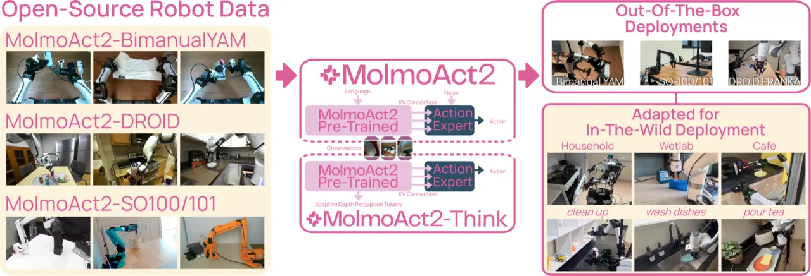
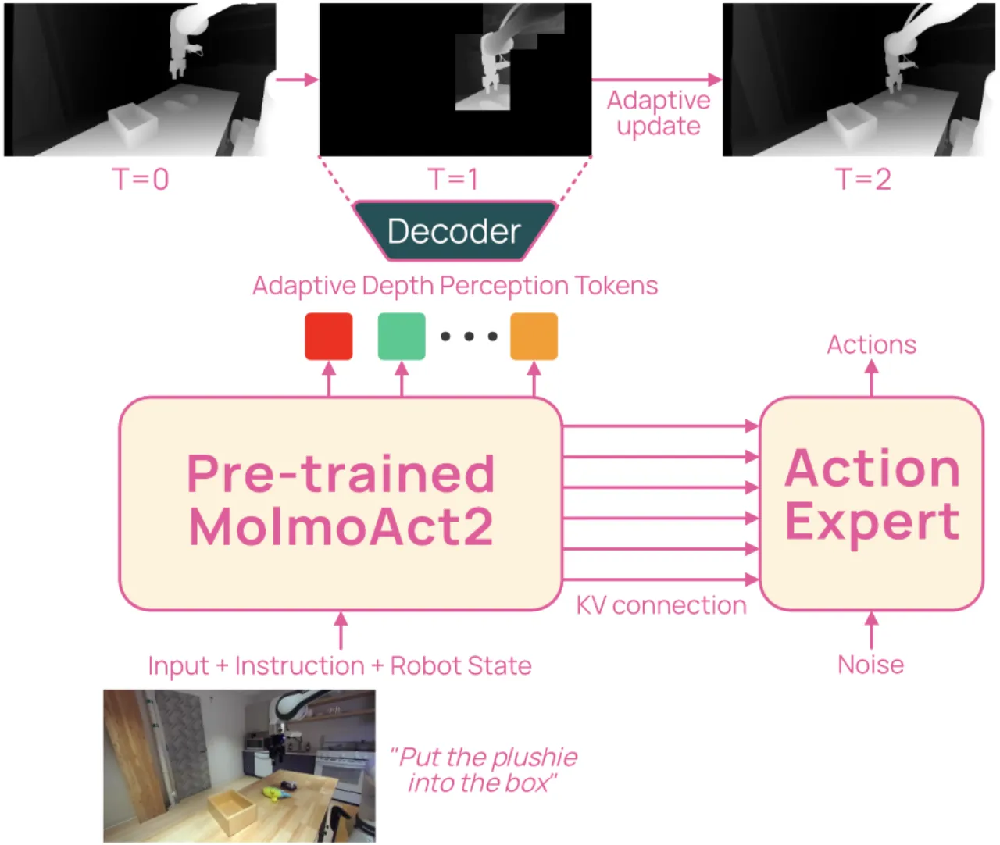
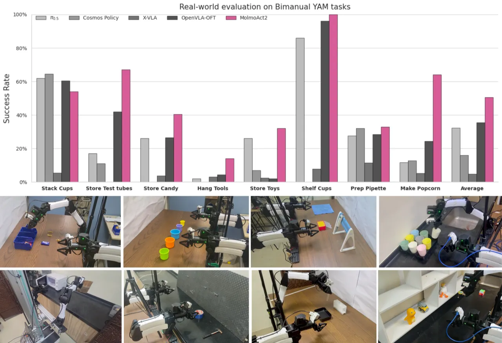
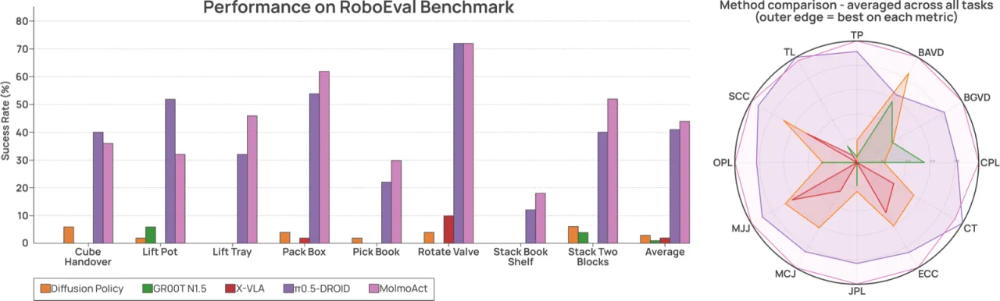
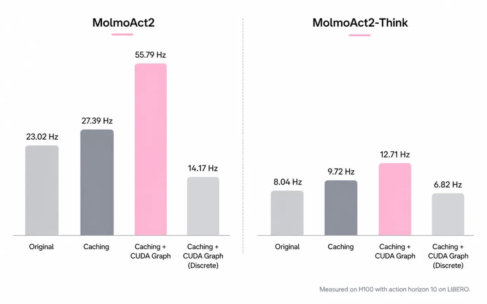

MolmoAct2 是一个完全开源的 Vision-Language-Action (VLA) 模型，围绕五个维度全面超越前作 MolmoAct：更强的具身推理 VLM 骨干 Molmo2-ER、三个新的机器人数据集（含迄今最大的开源双臂数据集 720 小时）、开源 action tokenizer、全新 VLA 架构（per-layer KV conditioning），以及自适应深度推理变体 MolmoAct2-Think，在 7 个仿真与真实世界基准上全面领先 π₀.₅ 等强基线。
当前的机器人基础模型距离真实部署仍有差距：顶级模型是闭源的；开源替代方案受限于昂贵硬件；引入推理的策略推理延迟过高；微调后的成功率仍低于可靠使用的阈值。
"Frontier models are closed; open-weight alternatives are tied to expensive hardware; reasoning-augmented policies pay prohibitive latency for their grounding; and fine-tuned success rates remain below the threshold for dependable use."
现有推理增强 VLA（如 MolmoAct、TraceVLA）通过预测深度 token、目标图像或轨迹来提升动作质量，但每步生成大量 token 导致推理延迟过高，无法支持闭环控制。同时，开源机器人数据集分散、质量参差不齐，难以支撑跨具身的多任务学习。

MolmoAct2 在五个维度上推进了前作 MolmoAct：（1）具身推理 VLM 骨干 Molmo2-ER；（2）三个新的开源机器人数据集；（3）开源多具身 action tokenizer OpenFAST；（4）基于 per-layer KV conditioning 的新 VLA 架构；（5）自适应深度推理变体 MolmoAct2-Think。训练分为三个阶段：预训练、后训练（post-training）和部署微调。
通用 VLM 很少训练机器人策略所需的技能——度量距离、自由空间、跨视角物体跟踪、场景几何。为此，MolmoAct2 基于 Molmo2-4B 进行 specialize-then-rehearse 两阶段训练：
Molmo2-ER 在 13 个具身推理基准上平均得分 63.8%，超越其基础模型 Molmo2 17 个百分点，并在 9/13 个基准上超越 Gemini Robotics ER-1.5 Thinking 和 GPT-5。
现有 action tokenizer 要么闭源，要么与特定动作空间绑定。MolmoAct2-OpenFAST 是遵循 FAST 方案的开源实现，在五类具身平台的数百万条轨迹上训练，可将 1 秒钟的 32 维连续动作压缩为紧凑的离散序列，支持跨具身的统一 next-token 训练目标。
MolmoAct2 采用三阶段流水线：预训练阶段将 Molmo2-ER 适配为离散自回归机器人策略；后训练阶段接入 flow-matching 连续动作专家（DiT 风格 transformer），并通过 per-layer KV conditioning 将 VLM 与动作专家耦合——即动作专家的每一层从对应的 VLM 层获取 Key-Value 状态，而非仅使用隐状态。消融实验表明，per-layer KV conditioning 在 LIBERO 全套平均得分 95.9%，优于隐状态条件化（94.0%）和 per-head KV 变体（94.8%）。部署微调阶段在具体具身平台、环境和任务上高效适配。

MolmoAct2-Think 在推理时维护 10×10 深度码缓冲区，通过余弦相似度（阈值 0.996）逐 patch 比较相邻帧，标记变化区域并选择性重新解码深度 token。这利用了机器人轨迹的时序冗余性，在保留几何空间感知的同时大幅降低延迟。精调时额外引入：10% 深度 token 噪声注入（应对推理时深度不完美预测）和可学习的 per-layer depth gate（从 bias=-4 初始化，逐步学习各层对深度前缀的权重）。
在 7 个仿真和真实世界基准上开展了迄今最广泛的开源 VLA 评估，涵盖 Molmo2-ER 具身推理能力评估、开箱即用部署、高效微调三个维度。
| 模型 | Spatial | Object | Goal | Long | 平均 |
|---|---|---|---|---|---|
| TraceVLA | 84.6% | 85.2% | 75.1% | 54.1% | 74.8% |
| π₀ | 96.8% | 98.8% | 95.8% | 85.2% | 94.2% |
| GR00T N1.7 | 97.7% | 97.5% | 98.5% | 94.4% | 97.0% |
| π₀.₅ | 98.8% | 98.2% | 98.0% | 92.4% | 96.9% |
| MolmoAct2 | 97.8% | 100.0% | 97.8% | 93.2% | 97.2% |
| MolmoAct2-Think | 98.8% | 99.8% | 98.5% | 95.4% | 98.1% |
| 模型 | Pick | Pick & Place | Open | Close | 平均 |
|---|---|---|---|---|---|
| π₀-DROID | 16.2 | 12.5 | 11.0 | 53.1 | 23.2 |
| π₀.₅-DROID | 36.4 | 13.6 | 22.7 | 65.1 | 34.5 |
| MolmoAct2-DROID | 43.7 | 26.7 | 9.5 | 70.8 | 37.7 |
| 模型 | Apple on plate | Pipette in tray | Red cube in tape | Knife in box | Objects in bowl | 平均 |
|---|---|---|---|---|---|---|
| π₀.₅-DROID | 66.7% | 33.3% | 53.3% | 26.7% | 46.2% | 45.2% |
| MolmoBot | 86.7% | 53.3% | 33.3% | 40.0% | 28.6% | 48.4% |
| MolmoAct2-DROID | 100.0% | 86.7% | 93.3% | 93.3% | 62.0% | 87.1% |
MolmoAct2 平均成功率 50.1%，超越第二名 OpenVLA-OFT 15 个百分点，在 8 项任务中 7 项排名第一，覆盖静态实验室、厨房、湿实验室、移动操作等场景。


| 模型 | Spatial Var. | Lighting | Language | Distractor | 总体 |
|---|---|---|---|---|---|
| π₀.₅ | 15.00 | 33.70 | 26.15 | 33.20 | 27.01 |
| OpenVLA-OFT | 13.75 | 46.25 | 51.25 | 48.30 | 39.89 |
| MolmoAct2-Think | 26.25 | 62.05 | 60.35 | 54.10 | 50.69 |
MolmoAct2-Think 在空间变化、光照、语言措辞变体和视觉干扰四类 OOD 扰动下，总体成功率 50.69%，超越第二名 OpenVLA-OFT 10.80 个百分点。

在 MolmoSpaces 基准的 Open（关节体交互）类别上，MolmoAct2-DROID 得分仅 9.5，明显低于 π₀.₅-DROID 的 22.7，表明"articulated-object interaction remains a direction for further improvement"（论文原文）。
在 OOD 鲁棒性评估中，MolmoAct2 在 Spatial Variance（空间位置超出训练分布）类别下的绝对成功率仅 26.25%，是四类扰动中最低的，表明细粒度空间泛化仍有提升空间（论文指出 "room for improvement on fine-grained spatial generalization"）。
MolmoAct2-Think 的自适应深度解码阶段因其自回归特性（序列依赖、变长执行），CUDA Graph 加速仅带来 1.58× 提升，远低于 MolmoAct2 的 2.42×。高延迟（约 12.71 Hz）相对于高频控制需求仍有差距。
尽管评估覆盖 DROID Franka、SO-100/101、双臂 YAM 三类平台，但均为桌面操作类任务，对移动底盘、人形机器人等更多具身形式的泛化能力尚未验证（从论文范围推断）。
MolmoAct2-Think 的深度 token 由 Depth Anything V2 单目估计生成，在反光表面、透明物体或极端光照等场景下深度估计可能失准，进而影响自适应深度推理质量（从数据处理流程推断）。